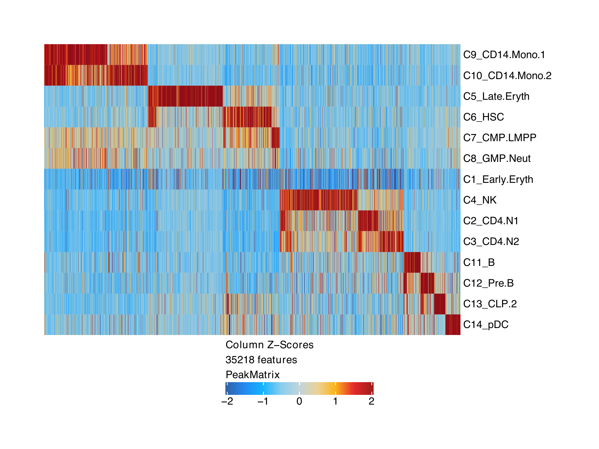
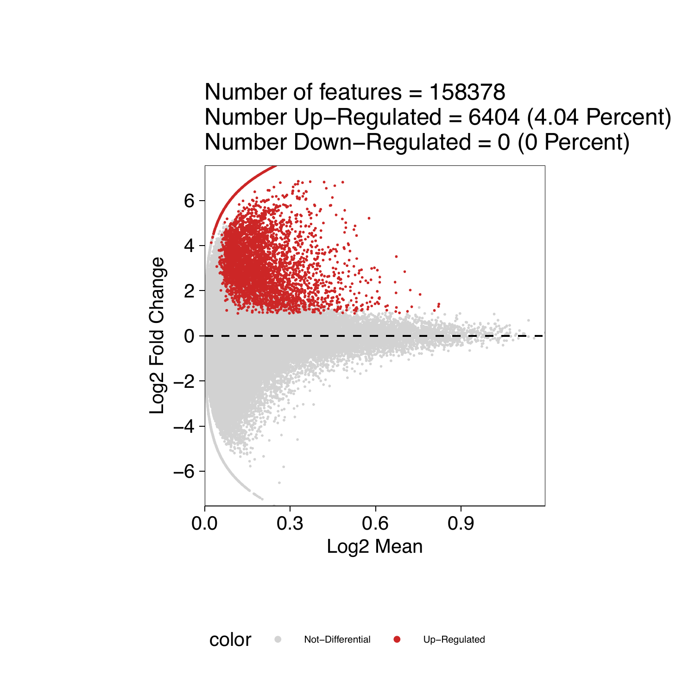
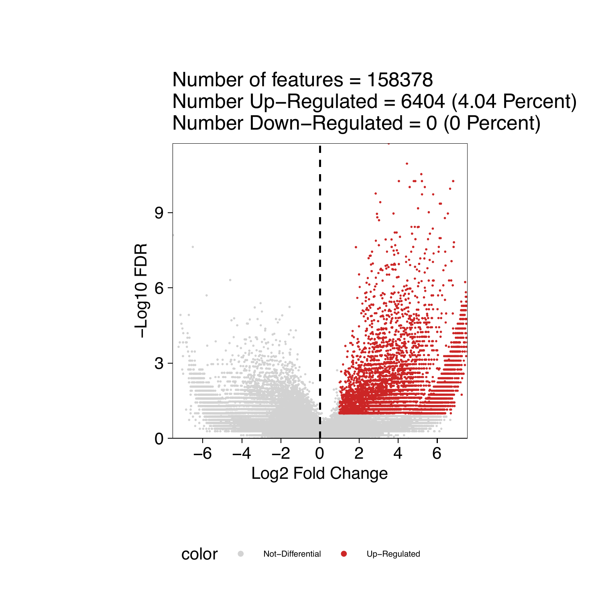
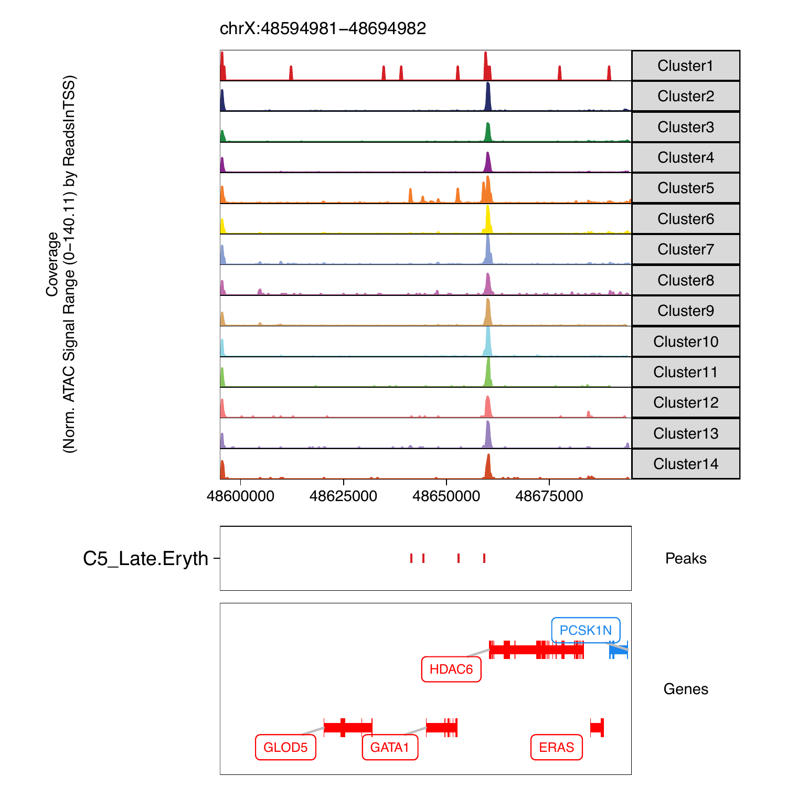

10.1 Identifying Marker Peaks with ArchR
Often times, we are interested to know which peaks are unique to an individual cluster or a small group of clusters. We can do this in an unsupervised fashion in ArchR:
addArchRThreads(8)
#Our scRNA labels
table(projHeme5$Clusters2)
# C1_Early.Eryth C10_CD14.Mono.2 C11_B C12_Pre.B C13_CLP.2
# 28 1070 425 351 408
# C14_pDC C2_CD4.N1 C3_CD4.N2 C4_NK C5_Late.Eryth
# 345 1330 562 901 860
# C6_HSC C7_CMP.LMPP C8_GMP.Neut C9_CD14.Mono.1
# 1218 974 274 1505
#Identify Marker Peaks while controling for TSS and Depth Biases
markersPeaks <- getMarkerFeatures(
ArchRProj = projHeme5,
useMatrix = "PeakMatrix",
groupBy = "Clusters2",
bias = c("TSSEnrichment", "log10(nFrags)"),
testMethod = "wilcoxon"
)
markersPeaks
# class: SummarizedExperiment
# dim: 158378 14
# metadata(2): MatchInfo Params
# assays(5): Log2FC Mean FDR AUC MeanBGD
# rownames(158378): 1 2 ... 158377 158378
# rowData names(4): seqnames idx start end
# colnames(14): C1_Early.Eryth C2_CD4.N1 ... C13_CLP.2 C14_pDC
# colData names(0):We can get the peak regions for each marker as DataFrame or GRanges.
#DataFrame
markerList <- getMarkers(markersPeaks, cutOff = "FDR <= 0.01 & Log2FC >= 1")
markerList
# List of length 14
# names(14): C1_Early.Eryth C2_CD4.N1 C3_CD4.N2 ... C12_Pre.B C13_CLP.2 C14_pDC
markerList$Erythroid
# DataFrame with 2262 rows and 6 columns
# seqnames idx start end Log2FC
# <Rle> <array> <array> <array> <numeric>
# 97705 chr22 1313 30129829 30130329 3.51592607805769
# 10135 chr1 10135 164681301 164681801 4.44617535438744
# 48828 chr15 1349 50552672 50553172 5.18141784055201
# 54061 chr16 1457 15615745 15616245 8.33999798117364
# 2928 chr1 2928 27869062 27869562 5.21444029812509
# ... ... ... ... ... ...
# 41787 chr13 3145 112037183 112037683 3.09392983218513
# 97647 chr22 1255 29702383 29702883 2.97001510006876
# 143218 chr8 1908 37949093 37949593 2.9624832757185
# 39746 chr13 1104 41255455 41255955 1.27203148042162
# 128023 chr6 3784 41169564 41170064 2.67070386367678
#GRanges
markerList <- getMarkers(markersPeaks, cutOff = "FDR <= 0.01 & Log2FC >= 1", returnGR = TRUE)
markerList
# GenomicRangesList of length 14
# names(14): C1_Early.Eryth C2_CD4.N1 C3_CD4.N2 ... C12_Pre.B C13_CLP.2 C14_pDC
markerList$Erythroid
# GRanges object with 2262 ranges and 2 metadata columns:
# seqnames ranges strand | Log2FC
# <Rle> <IRanges> <Rle> | <numeric>
# [1] chr22 30129829-30130329 * | 3.51592607805769
# [2] chr1 164681301-164681801 * | 4.44617535438744
# [3] chr15 50552672-50553172 * | 5.18141784055201
# [4] chr16 15615745-15616245 * | 8.33999798117364
# [5] chr1 27869062-27869562 * | 5.21444029812509
# ... ... ... ... . ...
# [2258] chr13 112037183-112037683 * | 3.09392983218513
# [2259] chr22 29702383-29702883 * | 2.97001510006876
# [2260] chr8 37949093-37949593 * | 2.9624832757185
# [2261] chr13 41255455-41255955 * | 1.27203148042162
# [2262] chr6 41169564-41170064 * | 2.67070386367678We can visualize this as a heatmap
#Visualize Markers as a heatmap
heatmapPeaks <- markerHeatmap(
seMarker = markersPeaks,
cutOff = "FDR <= 0.1 & Log2FC >= 0.5",
transpose = TRUE
)
draw(heatmapPeaks, heatmap_legend_side = "bot", annotation_legend_side = "bot")
We can then plot this
plotPDF(heatmapPeaks, name = "Peak-Marker-Heatmap", width = 8, height = 6, ArchRProj = projHeme5, addDOC = FALSE)We can also plot an MA/Volcano Plot for any individual cluster
#Marker Peaks for Erythroid
pma <- markerPlot(seMarker = markersPeaks, name = "Erythroid", cutOff = "FDR <= 0.1 & Log2FC >= 1", plotAs = "MA")
pma
pv <- markerPlot(seMarker = markersPeaks, name = "Erythroid", cutOff = "FDR <= 0.1 & Log2FC >= 1", plotAs = "Volcano")
pv
We can then plot this as a nice pdf
plotPDF(pma, pv, name = "Erythroid-Markers-MA-Volcano", width = 5, height = 5, ArchRProj = projHeme5, addDOC = FALSE)Additionally we can see these peak regions overlayed on our browser tracks
p <- ArchRBrowserTrack(
ArchRProj = projHeme5,
groupBy = "Clusters2",
geneSymbol = c("GATA1"),
features = getMarkers(markersPeaks, cutOff = "FDR <= 0.1 & Log2FC >= 1", returnGR = TRUE)["Erythroid"],
upstream = 50000,
downstream = 50000
)
grid::grid.newpage()
grid::grid.draw(p$GATA1)
We can then plot this as a nice pdf